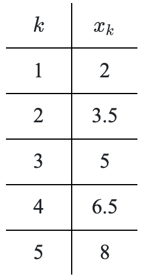

Evaluate each equation shown for the given values of n and write the associated sum in expanded form by adding the terms of each sequence. Calculate the value of each sum and check your answers with your team.
\(t(n)=0.5(0.5n+2)^2\) where \(n=0\), \(1\), \(2\), and \(3\)
\(t(n)=0.5(0.5n+2)^2\) where \(n=1\), \(2\), \(3\), and \(4\)
What are the similarities and differences between the two sums written in expanded form?
Write each of the following sums in expanded form and then calculate the value of each sum. Note: The first one has been expanded for you. The second one has been partially expanded.
\(\displaystyle \sum _ { j = 3 } ^ { 6 } ( 2 ) ^ { j } = (2)^3+(2)^4+(2)^5+(2)^6=\)
\(\displaystyle \sum _ { n = 3 } ^ { 5 } ( 4 n ^ { 2 } + 2 ) = (4(3)^2+2)+\ldots =\)
\(\displaystyle \sum _ { k = 1 } ^ { 5 } 16 \left( \frac { 1 } { 2 } \right) ^ { k } =\)
\(\displaystyle \sum _ { m = 1 } ^ { 4 } \frac { 1 } { m ( m + 1 ) } =\)
For part (b) above, identify the argument and the index.
Locate the summation feature on a calculator. Use this feature to verify that the sum you calculated by hand in part (a) is correct.
Waylon wrote the following expansion for the sum shown. Check his work. Is it correct? Explain.
\(\displaystyle \sum _ { p = 5 } ^ { 7 } p ^ { 2 } = 5 ^ { 2 } + 5.5 ^ { 2 } + 6 ^ { 2 } + 6.5 ^ { 2 } + 7 ^ { 2 } = 182.5\)
On his Calculus test, Carter needs to divide the interval \(2\le x\le3\) into five segments of equal length.
What is the length of each sub-segment? How did you calculate this length?
Sketch a diagram of this interval.
List the left endpoints of each sub-segment as a sequence. Then write an equation for this sequence.
List the right endpoints of each sub-segment as a sequence. Then write an equation for this sequence.
How are your sequences in parts (c) and (d) related?
A series is the sum of the terms in a sequence. Use the following series written in expanded form to complete the parts shown.
\(3.6+4.0+4.4+4.8+5.2\)
Use sigma notation to express the sum.
What changes would you make in your notation from part (a) to express the sum \(4.0+4.4+4.8+5.2+5.6\)?
Compute the sum from part (a) by hand, and then use a calculator’s summation feature to verify your sum written in sigma notation.
Suppose that \(3.6+4.0+4.4+4.8\ +...+\ 23.6\) is to be expressed in sigma notation where the index \(n\) begins at \(0\).
Why is the argument \(0.4n+3.6\)?
What is the value of \(n\) for the last term?
Express the sum using sigma notation.
Use the same idea to express \(2.5+2.7+2.9+3.1\ +...+\ 22.5\) in sigma notation where the index \(n\) begins at \(0\).
\(x_0\), \(x_1\), \(x_2\), \(x_3\), \(x_4\), and \(x_5\)can be used to represent the values of \(x\) when an interval is broken into five equal pieces. If the interval \(1\le x\le4\) is divided into five equal pieces, where \(x_0=1\) and \(x_5=4\), list\(x_1\), \(x_2\), \(x_3\), and \(x_4\). Refer to the preceding Math Notes box for an example.
Express the given series using sigma notation, then evaluate the sums with a calculator or by hand.
\(4+8+12+16+20\)
\(1+2+4+8+16+32\)
\(2+4+6+8\ +\ ...\ +\ 200\)
Complete the following division problem. Express any remainder as a fraction.
\((x^3+x^2-14x+2)\div\)\((x-3)\)
Deja wants a coffee from Luckstars, but the store closes very soon. She drives as fast as she can, \(45\) mph, to get to the store before they close. On the way back she is relaxed and drives at half the speed. Assuming that she drives on the same straight road with no traffic or stops both there and back, what is her average driving speed?
Factor completely.
\(2a^2+5ab-3b^2\)
\(-3c^2+5cd-2d^2\)
Determine the exact value of each of the following trigonometric expressions without using a calculator.
\(\cos\left(\frac{7\pi}{6}\right)\)
\(\sin\left(\frac{3\pi}{2}\right)\)
\(\tan\left(\frac{3\pi}{2}\right)\)
\(\tan\left(\frac{2\pi}{3}\right)\)
Use the table shown to write an equation for \(x_k\) in terms of \(k\).

KRISTOF’S EARNINGS
Kristof worked at MacDonut’s for \(\$8.00\)/hour. One Friday night he worked \(5\) hours.
How much did he earn that night? What is his rate of pay?
Sketch a graph of Kristof’s pay rate where the horizontal axis represents hours and the vertical axis represents dollars earned per hour. How is Kristof’s constant pay rate represented on your graph?
The area under your line should be a rectangle. Divide the rectangle you get into smaller rectangles by drawing vertical lines at the \(1\)-hour, \(2\)-hour, \(3\)-hour, \(4\)-hour, and \(5\)-hour marks. How many rectangles have you created?
Explain to the other people on your team what the area of each of the rectangles you created in part (c) represents. Hint: What are the units of each side of the rectangles and how are they related to the area?